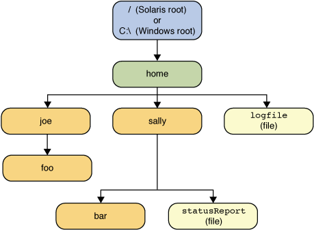

|
Path class includes various methods that can be used to
obtain information about the path, access elements of the path,
convert the path to other forms,
or extract portions of a path. There are also methods for matching
the path string
and methods for removing redundancies in a path.
This lesson addresses these Path methods, sometimes
called syntactic operations, because they operate on the
path itself and don't access the file system.
This section covers the following:
A Path instance contains the information used to specify the
location of a file or directory. At the time it is defined,
a Path is provided with a series of one or more names.
A root element or a file name might be included, but neither
are required.
A Path might consist of just a single directory or file name.
You can easily create a Path object by using one of the
following get methods from the
Paths (note the plural) helper class:
Path p1 = Paths.get("/tmp/foo");
Path p2 = Paths.get(args[0]);
Path p3 = Paths.get(URI.create("file:///Users/joe/FileTest.java"));
The Paths.get method is shorthand for the following code:
Path p4 = FileSystems.getDefault().getPath("/users/sally");
The following example creates /u/joe/logs/foo.log
assuming your home directory is /u/joe, or
C:\joe\log\foo.log if you are on Windows.
Path p5 = Paths.get(System.getProperty("user.home"), "logs", "foo.log");
You can think of the Path as storing these name elements
as a sequence. The highest element in the
directory structure would be located at index 0.
The lowest element in the directory structure would be located at index
[n-1], where n is the number of name
elements in the Path.
Methods are available for retrieving individual elements
or a subsequence of the Path using these indexes.
The examples in this lesson use the following directory structure.

The following code snippet defines a
Path instance and then invokes several
methods to obtain information about the path:
// None of these methods requires that the file corresponding
// to the Path exists.
Path path = Paths.get("C:\\home\\joe\\foo"); // Microsoft Windows syntax
//Path path = Paths.get("/home/joe/foo"); // Solaris syntax
System.out.format("toString: %s%n", path.toString());
System.out.format("getFileName: %s%n", path.getFileName());
System.out.format("getName(0): %s%n", path.getName(0));
System.out.format("getNameCount: %d%n", path.getNameCount());
System.out.format("subpath(0,2): %s%n", path.subpath(0,2));
System.out.format("getParent: %s%n", path.getParent());
System.out.format("getRoot: %s%n", path.getRoot());
| Method Invoked | Returns in the Solaris OS | Returns in Microsoft Windows | Comment |
|---|---|---|---|
toString |
/home/joe/foo |
|
Returns the string representation of the Path.
If the path was created using
Filesystems.getDefault().getPath(String)
or Paths.get (the latter is a convenience method
for getPath), the method performs minor
syntactic cleanup. For example, in a UNIX operating system,
it will correct the input string //home/joe/foo
to /home/joe/foo.
|
getFileName |
foo |
foo |
Returns the file name or the last element of the sequence of name elements. |
getName(0) |
home |
home |
Returns the path element corresponding to the specified index. The 0th element is the path element closest to the root. |
getNameCount |
3 |
3 |
Returns the number of elements in the path. |
subpath(0,2) |
home/joe |
home\joe |
Returns the subsequence of the Path
(not including a root element) as specified by the
beginning and ending indexes.
|
getParent |
/home/joe |
\home\joe |
Returns the path of the parent directory. |
getRoot |
/ |
C:\ |
Returns the root of the path. |
The previous example shows the output for an absolute path. In the following example, a relative path is specified:
Path path = Paths.get("sally/bar"); // Solaris syntax
or
Path path = Paths.get("sally\\bar"); // Microsoft Windows syntax
Here is the output for Windows and the Solaris OS:
| Method Invoked | Returns in the Solaris OS | Returns in Microsoft Windows |
|---|---|---|
toString |
sally/bar |
sally\bar |
getFileName |
bar |
bar |
getName(0) |
sally |
sally |
getNameCount |
2 |
2 |
subpath(0,1) |
sally |
sally |
getParent |
sally |
sally |
getRoot |
null |
null |
Path contains
redundant directory information.
Perhaps a server is configured to save its log files in
the "/dir/logs/." directory, and you want to
delete the trailing "/." notation from the path.
The following examples both include redundancies:
/home/./joe/foo /home/sally/../joe/foo
normalize method removes any redundant elements,
which includes any "." or
"directory/.." occurrences.
Both of the preceding examples normalize to /home/joe/foo.
It is important to note that
normalize doesn't check at the file system
when it cleans up a path. It is a purely syntactic operation.
In the second example, if sally were a symbolic link,
removing sally/.. might result in a Path
that no longer locates the intended file.
To clean up a path while ensuring that the
result locates the correct file, you can
use the toRealPath method. This method is
described in the next section,
Converting a Path.
Path. If you need to convert the path to
a string that can be opened from a browser, you can use
toUri. For example:
Path p1 = Paths.get("/home/logfile");
System.out.format("%s%n", p1.toUri()); // Result is file:///home/logfile
The
toAbsolutePath method converts a path to an absolute path. If the passed-in
path is already absolute, it returns the same Path object.
The toAbsolutePath method can be very helpful when
processing user-entered file names. For example:
public class FileTest {
public static void main(String[] args) throws IOException {
if (args.length < 1) {
System.out.println("usage: FileTest file");
System.exit(-1);
}
// Converts the input string to a Path object.
Path inputPath = Paths.get(args[0]);
// Converts the input Path to an absolute path.
// Generally, this means prepending the current working
// directory. If this example were called like this:
// java FileTest foo
// the getRoot and getParent methods would return null
// on the original "inputPath" instance. Invoking getRoot and
// getParent on the "fullPath" instance returns expected values.
Path fullPath = inputPath.toAbsolutePath();
}
}
The toAbsolutePath method converts the user input and
returns a Path that returns useful values when queried.
The file does not need to exist for this method to work.
The
toRealPath method returns the real path of an existing file.
This method performs several operations in one:
true is passed to this method and the file system
supports symbolic links, this method resolves any symbolic links in the path.
Path is relative, it
returns an absolute path.
Path contains any redundant elements,
it returns a path with those elements removed.
This method throws an exception if the file does not exist or cannot be accessed. You can catch the exception when you want to handle any of these cases. For example:
try {
Path fp = path.toRealPath(true);
} catch (NoSuchFileException x) {
System.err.format("%s: no such file or directory%n", path);
//Logic for case when file doesn't exist.
} catch (IOException x) {
System.err.format("%s%n", x);
//Logic for other sort of file error.
}
You can combine paths by using the
resolve method.
You pass in a partial path , which is a path that does not
include a root element, and that partial path is appended to
the original path.
For example, consider the following code snippet:
Path p1 = Paths.get("/home/joe/foo"); // Solaris
System.out.format("%s%n", p1.resolve("bar")); // Result is /home/joe/foo/bar
or
Path p1 = Paths.get("C:\\home\\joe\\foo"); // Microsoft Windows
System.out.format("%s%n", p1.resolve("bar")); // Result is C:\home\joe\foo\bar
resolve method
returns the passed-in path:
Paths.get("foo").resolve("/home/joe"); // Result is /home/joe
relativize method.
This method constructs a path originating from the original
path and ending at the location specified by the passed-in path.
The new path is relative to the original path.
For example, consider two relative paths defined as joe and
sally:
Path p1 = Paths.get("joe");
Path p2 = Paths.get("sally");
joe and sally are siblings, meaning
nodes that reside at the same level in the tree structure.
To navigate from joe to sally,
you would expect to first navigate one level up to the parent
node and then down to sally:
Path p1_to_p2 = p1.relativize(p2); // Result is ../sally Path p2_to_p1 = p2.relativize(p1); // Result is ../joe
Path p1 = Paths.get("home");
Path p3 = Paths.get("home/sally/bar");
Path p1_to_p3 = p1.relativize(p3); // Result is sally/bar
Path p3_to_p1 = p3.relativize(p1); // Result is ../..
home.
To navigate from home to bar, you first
navigate one level down to sally and then
one more level down to bar.
Navigating from bar to home requires
moving up two levels.
A relative path cannot be constructed if only one of the paths includes a root element. If both paths include a root element, the capability to construct a relative path is system dependent.
The recursive
Copy example uses the relativize and resolve methods.
The Path class supports
equals, enabling you to test two paths for equality. The
startsWith and
endsWith methods enable you to test whether a path begins or ends with a particular
string. These methods are easy to use. For example:
Path path = ...;
Path otherPath = ...;
Path beginning = Paths.get("/home");
Path ending = Paths.get("foo");
if (path.equals(otherPath)) {
//equality logic here
} else if (path.startsWith(beginning)) {
//path begins with "/home"
} else if (path.endsWith(ending)) {
//path ends with "foo"
}
The Path class implements the
Iterable interface. The
iterator method returns an object that enables you to iterate over
the name elements in the path. The first element returned
is that closest to the root in the directory tree.
The following code snippet iterates over a path, printing
each name element:
Path path = ...;
for (Path name: path) {
System.out.println(name);
}
The Path class also implements the
Comparable interface. You can compare Path objects
by using compareTo which is useful for sorting.
You can also put Path objects into
a Collection. See the
Collections trail for more information about this powerful feature.
When you want to verify that two Path objects locate the same
file, you can use the isSameFile method, as described in
Checking Whether Two Paths Locate the Same File.
|